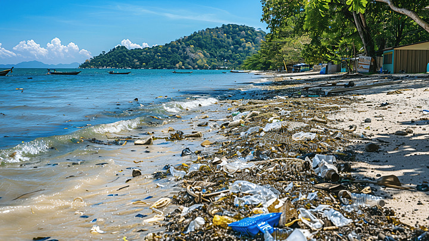
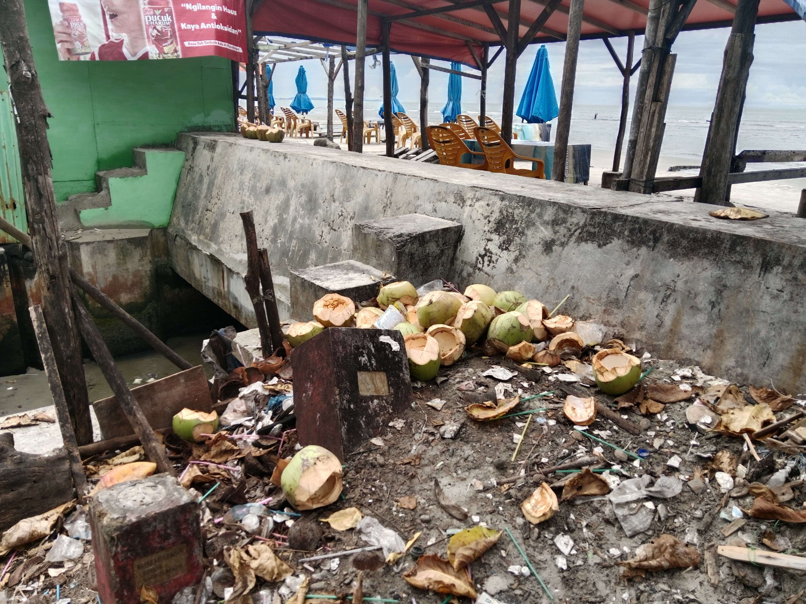
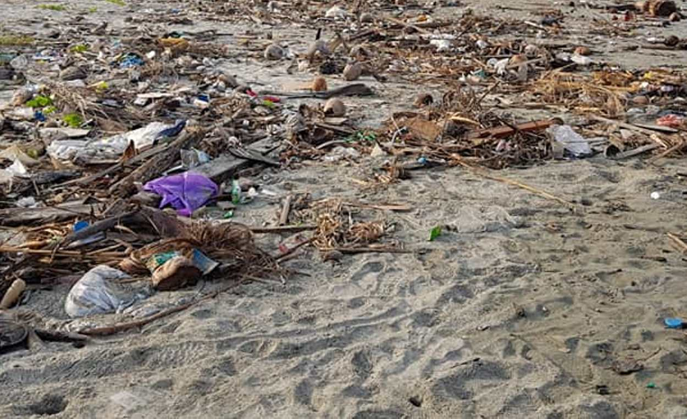
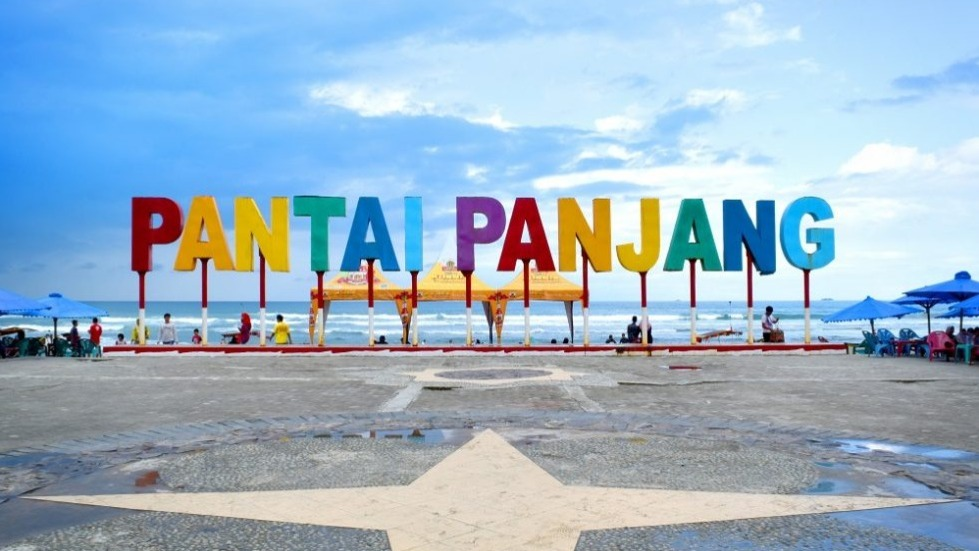
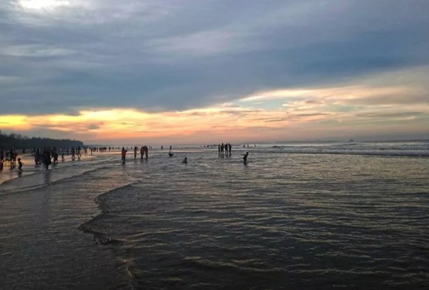
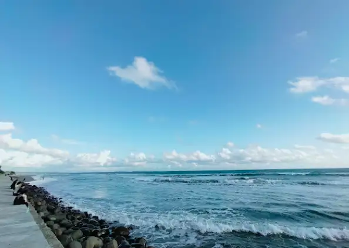

Sampah di pantai Bengkulu menjadi masalah lingkungan serius yang dapat merusak ekosistem laut, mengurangi keindahan wisata, dan mengancam kehidupan masyarakat pesisir.
Lihat SolusiSampah pantai tidak selalu menjadi limbah. Jika diolah dengan baik, sampah dapat menjadi barang yang bermanfaat dan bernilai ekonomi.
Kayu yang terbawa ombak dapat diolah menjadi furniture unik, hiasan rumah, lampu hias, dan kerajinan dekorasi.
Botol dan plastik bekas dapat dijadikan tas belanja, pot bunga, dompet, ecobrick, dan hiasan kreatif.
Cangkang kerang dapat dibuat menjadi gantungan kunci, bros, kalung, bingkai foto, dan souvenir wisata.
Pecahan kaca yang halus karena ombak bisa dijadikan perhiasan, mozaik, dan dekorasi seni.
Kaleng bekas dapat diubah menjadi miniatur, tempat pensil, lampu hias, dan karya seni unik.
Beberapa faktor utama penyebab banyaknya sampah di pantai Bengkulu.
Masih banyak pengunjung yang membuang sampah sembarangan tanpa memikirkan dampaknya bagi lingkungan.
Kurangnya fasilitas tempat sampah membuat sampah menumpuk di sekitar pantai.
Sampah dari sungai dan laut terbawa arus hingga sampai ke kawasan pantai Bengkulu.
Sampah memberikan dampak buruk bagi lingkungan dan pariwisata.
Keindahan pantai berkurang akibat sampah yang berserakan di berbagai area.
Sampah plastik dapat membahayakan ikan, penyu, dan hewan laut lainnya.
Sampah yang membusuk menyebabkan bau tidak sedap dan mengganggu kenyamanan.
Wisatawan menjadi kurang tertarik mengunjungi pantai yang kotor dan tidak terawat.
Sampah Plastik
Relawan Peduli Pantai
Sampah Dibersihkan
Untuk Masa Depan Bersih
Langkah sederhana namun penting untuk menjaga kebersihan pantai.
Menambah tempat sampah di area wisata agar pengunjung lebih mudah menjaga kebersihan.
Mengadakan kegiatan bersih pantai bersama masyarakat, pelajar, dan relawan.
Memberikan sosialisasi pentingnya menjaga lingkungan dan membuang sampah pada tempatnya.
Mengolah sampah menjadi barang yang berguna dan bernilai ekonomi.
Mengurangi penggunaan plastik sekali pakai demi menjaga kebersihan laut.
Dokumentasi kondisi pantai bersih dan aksi peduli lingkungan.





